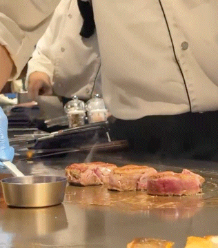
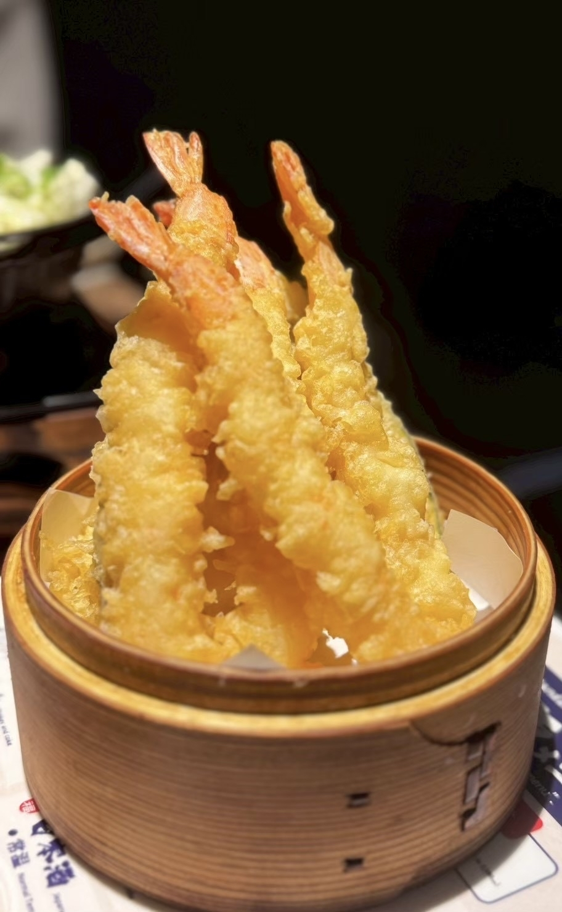

目の前で焼き上がるお肉と海鮮！リオの贅沢な鉄板焼きランチ
大阪グルメ旅day1。
まずランチに訪れたのは「神戸牛 鉄板焼 リオ 大阪御堂筋店」さんです。
今回注文したのは「フィレステーキ＆シーフードランチ」。
サラダ、海老・イカ・本日のお魚の鉄板バター焼き、フィレステーキ50g、ライス、汁物が付いた、贅沢なランチセットです。
カウンターの目の前にある大きな鉄板で、シェフが食材を一つずつ丁寧に焼き上げてくれます。
お肉が焼ける音や香ばしい香りを間近で楽しめて、料理を待っている時間からワクワクしました。
フィレ肉は赤身が強めで、お肉そのものの味がとても濃く感じられます。
焼き加減は好みに合わせてもらえるとのことだったので、今回はおすすめでお願いしました。
サイコロ状に食べやすく切られたお肉は、中心にきれいな赤みが残ったレアの焼き加減。
火の入り方が絶妙で、やわらかさを楽しみながらも、噛むほどにしっかりとした肉の旨みが広がっていきます。
いろいろな薬味や味付けで楽しめましたが、個人的に一番好みだったのは山わさび。
山わさびのさわやかな辛みが、濃いお肉の味をさらに引き立ててくれました。

セットのシーフードもどれも絶品です。
海老やイカは鉄板で香ばしく焼き上げられていて、バターの風味との相性もぴったりでした。
特に印象に残ったのが鮭です。
表面は香ばしく、中はふわっとやわらかくてジューシー。
鉄板で焼き上げるからこそ感じられる香りと食感で、お肉に負けないほど満足感のある一品でした。
目の前で仕上がっていく様子も含めて楽しめる、少し贅沢なランチになりました。
===店舗情報===
店名: 神戸牛 鉄板焼 リオ 大阪御堂筋店
リンク: 公式ウェブサイト
住所: 大阪府大阪市中央区平野町4-2-3 オービック御堂筋ビル1F
サクッと軽い衣がたまらない！米福の絶品海鮮天ぷら
夕食に訪れたのは「天ぷら寿司海鮮 米福 西梅田店」さん。
今回は天ぷらを中心に、まぐろの天ぷらやぶりしゃぶなど、いろいろな海鮮料理をいただきました。
天ぷらは衣がとても軽く、油っぽさを感じにくい好みの食感。
中でも特においしかったのが、画像の海老の天ぷらです。
大きな海老がたっぷり盛られていて、見た目にも迫力があります。
サクッとした衣の中はぷりっとしていて、噛むと海老の甘みがしっかり広がりました。
今回はお塩でいただきましたが、衣の香ばしさと海老の旨みがよく引き立っていました。

まぐろの天ぷらは、お刺身でいただくときとはまた違った味わい。
ぶりしゃぶもさっぱりしていて、天ぷらの合間にちょうどよく楽しめました。
天ぷらからお刺身、鍋料理まで、いろいろな海鮮を味わえる満足度の高い夕食になりました。
===店舗情報===
店名: 天ぷら寿司海鮮 米福 西梅田店
リンク: 公式ウェブサイト
住所: 大阪府大阪市北区堂島1-5-17 堂島グランドビル1F